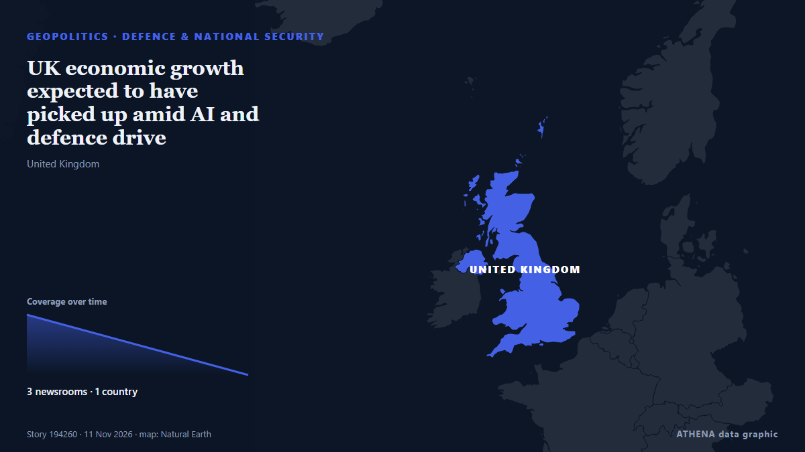

Defence & national security
SponsoredPresented by  Cybernetics and Artificial Intelligence Lab Welcome to the Cybernetics and Artificial Intelligence Laboratory, established at the Department of Business Administration of the National and Kapodistrian University of Athens. The lab is headed by Professor Dimitrios Thomakos. The lab aims to do research that can be published in top venues. Our research uses tools and methods of Artificial Intelligence, and lies in the following areas: - Forecasting - Decision making - Cyber security - Finance We are always looking forward to collaborating with exceptional students!
Cybernetics and Artificial Intelligence Lab Welcome to the Cybernetics and Artificial Intelligence Laboratory, established at the Department of Business Administration of the National and Kapodistrian University of Athens. The lab is headed by Professor Dimitrios Thomakos. The lab aims to do research that can be published in top venues. Our research uses tools and methods of Artificial Intelligence, and lies in the following areas: - Forecasting - Decision making - Cyber security - Finance We are always looking forward to collaborating with exceptional students!
| 30 Oct | 0 |
|---|---|
| 31 Oct | 0 |
| 1 Nov | 0 |
| 2 Nov | 0 |
| 3 Nov | 0 |
| 4 Nov | 0 |
| 5 Nov | 1 |
| 6 Nov | 1 |
| 7 Nov | 1 |
| 8 Nov | 1 |
| 9 Nov | 8 |
| 10 Nov | 9 |
| 11 Nov | 3 |
| 12 Nov | 0 |

UK economic growth expected to have picked up amid AI and defence drive
The Office for National Statistics was publishing the latest gross domestic product figures on Thursday. from The Irish News (Belfast)
NATO seeks to prioritise countering Russia and scale back overseas missions – Politico
NATO allies are discussing changes to military capability requirements that would prioritise a major conflict in Europe over simultaneous overseas crisis-management missions, amid concerns about… from Ukrainska Pravda (English)
US, Poland sign Statement of Intent to strengthen defense industry cooperation
Defense Secretary Pete Hegseth meets with his Polish counterpart Wladyslaw Kosiniak-Kamysz at Pentagon. from Anadolu Agency (English)
N. Korea tests new torpedo, eyes early 2027 deployment
SEOUL, Nov. 10 (Yonhap) -- North Korea has test-fired a new type of torpedo in t... from Yonhap (English)
Witness: SALN does not prove Sara Duterte’s ownership of GenCorp
MANILA, Philippines – Vice President Sara Duterte’s “unilateral declaration” that she was a stockholder of GenCorp Industries Inc. does not make her one, its counsel told the Senate impeachment court… from Philippine Daily Inquirer
Saudi Crown Prince, Greek PM Discuss Bilateral Cooperation
RIYADH: Saudi Crown Prince Mohammed bin Salman held a telephone call on Tuesday with Greek Prime Minister Kyriakos Mitsotakis.During the call, the two leaders discussed relations between their… from Arab News
Change bloc agrees to name Matan Kahana Knesset speaker
The leaders of Israel's change bloc parties have reached an agreement on the allocation of senior positions in the 26th Knesset, even before the process of forming a new government has begun. from Israel Hayom (English)
12 US Senators seek removal of provisions expanding defense cooperation with Israel
Lawmakers warn that mandated co-production and intelligence sharing could limit executive authority and give Tel Aviv greater leverage. from Anadolu Agency (English)
The USS Theodore Roosevelt Is Finally on Its Way to the Middle East
The US Navy supercarrier left port more than a month ago, and has made several stops in Asia on its way west. from The National Interest
Top White House staffer leaves after Stephen Miller promoted
Richard Walters leaving after six months as one of Susie Wiles’ ‘closest political lieutenants’ as Trump administration shake-up continues following midterms wipeout. from The Independent
Hegseth to cut civilians from military service colleges, wants focus on ‘victory’
Hegseth ordered an overhaul of higher military service colleges today, releasing a memorandum listing 33 directives that he stated would be effective immediately. from Military Times
Pentagon: Era of US funding Europe's defense is coming to an end
A U.S. Army unit in Germany is not sure what’s next as the Pentagon considers a major drawdown of forces in Europe. from The New York Times (World)
Rubio: Israel Can Purchase US Weapons Without American Financial Aid
Speaking on Monday, Rubio said Israel had "graduated beyond" the need for financial aid, while emphasizing that it could continue purchasing military equipment from the United States without… from Kurdistan24 (English)
Finland's navy chief says Russia's presence in the Baltic Sea may have peaked for now
Russia may have reached the limit of its "peacetime" ability to project force in the Baltic Sea, with the maritime situation "tense" but "stable", the head of Finland's navy has said. from Sky News (World)
Dendias Outlines New Era for Hellenic Air Force
Defence Minister Nikos Dendias outlines plans for fifth-generation fighters, three KC-390 aircraft, advanced air defence and Greece's first Space Command. from Greek City Times
Defense attorney in Tupac Shakur murder trial discovered dead inside his Vegas home
The lawyer who defended the man convicted of killing rapper Tupac Shakur was found dead Friday inside his Las Vegas home, a short time… from ABA Journal
Greek Shipyard Secures Role in Sweden’s €4.3B Frigate Program
Salamina Shipyards has signed an agreement with France’s Naval Group to build pre-equipped sections for four Swedish FDI frigates, expanding its work beyond vessels ordered by the Greek and French… from to vima
NSC Sec-Gen: Thailand faces daily cyber threats
Thailand faces daily cyberattack attempts targeting government agencies, banks and critical infrastructure, with attackers increasingly using artificial intelligence (AI) to identify vulnerabilities… from Bangkok Post